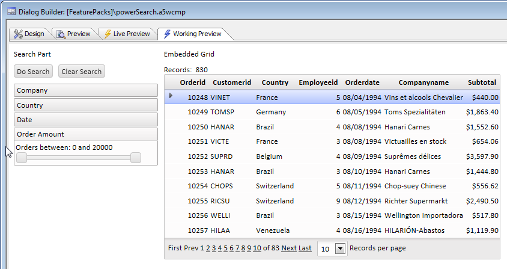
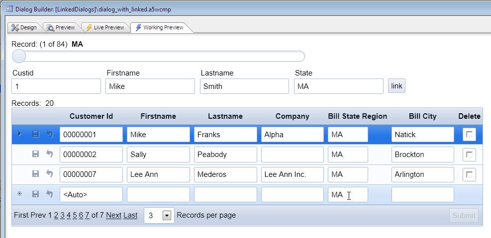

Power Search for Grid using a Dialog Component
Requires the Dialog Component - Power Search for an Embedded Grid Component feature pack, included in subscription
While it is easy to add a Search Part to a Grid, there may be situations where you want to create a much more sophisticated Search Part for the Grid than the built-in Search Part allows.
(See http://smartphones.findthebest.com/
For example, you might want your 'search part' to be organized into collapsible 'accordion' panes and you might want users to be able to use sliders and calendar controls to enter their search criteria.
How to use a Dialog to create a 'power search' part for an embedded Grid.
Using the layout power that the Dialog offers, it is very easy to create extremely sophisticated layouts to prompt for search criteria. This video shows how you can use new actions in Action Javascript to submit the Dialog, compute a search expression from the submitted data, and then apply the search to a Grid that has been embedded into the Dialog. The net result is the ability to create an extremely powerful and flexible 'power search' part for your Grids.Watch Video - Part 1
The next set of videos show how the Power Search part was created.
Watch Video - Part 1
Watch Video - Part 2
Watch Video - Part 3
Watch Video - Part 4
Watch Video - Part 5
Download Components Used in Video
Linking a Grid that is Embedded in a Dialog
In the previous videos we show how a Grid that is embedded into a Dialog can be searched. In this video, instead of searching the embedded Grid we link it. Linking is like searching, in that it causes the records in the target Grid to be filtered, but has a very important difference - the link fields in the target Grid are automatically set to their corresponding value in the parent component. So, for example, if the embedded Grid is linked on (say) the invoice_number field, all new records that are added to the embedded Grid will automatically have their invoice_number field set to the linking value.See also Live Linked Embedded Grids in a Dialog V11 for information on how to create live links that update automatically.

Watch Video